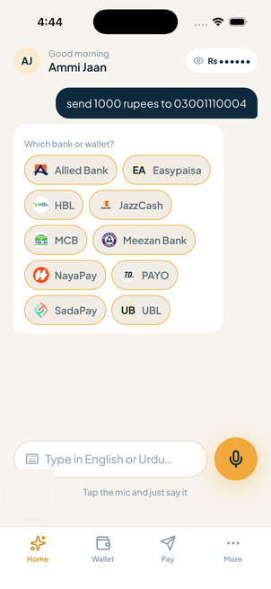
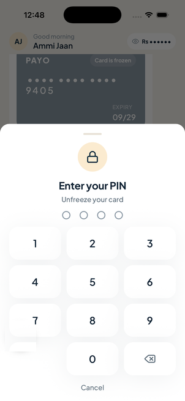
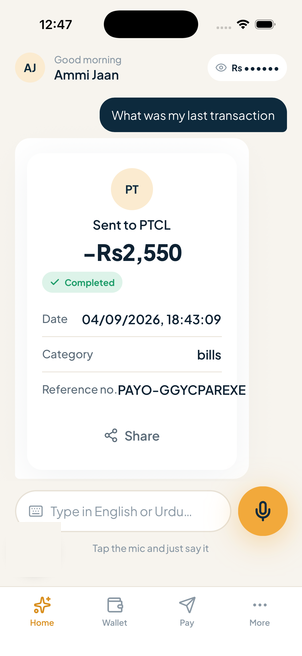

Magic moment 01 · Send money
You say “send 1,000 rupees” and the PIN pad opens inside the conversation.

It asks which bankChips, not an IBAN field

The PIN opens in chatNo separate screen, ever

The receipt is a cardSpoken aloud, kept on screen
The account title is resolved before anything moves. The recipient is saved by nickname afterwards.